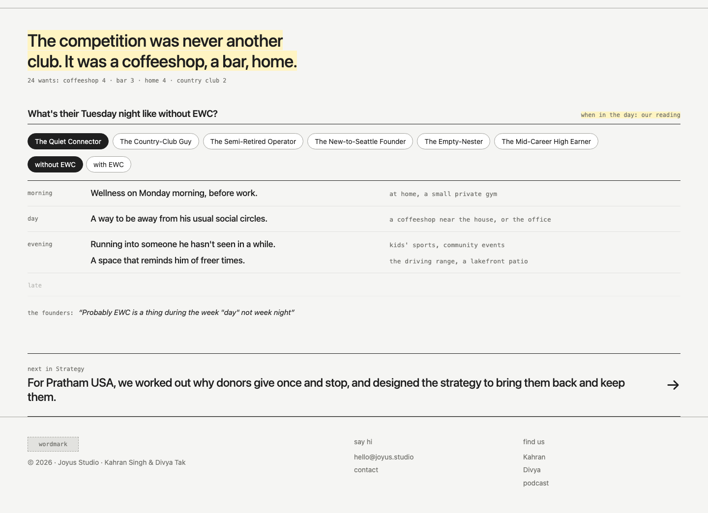
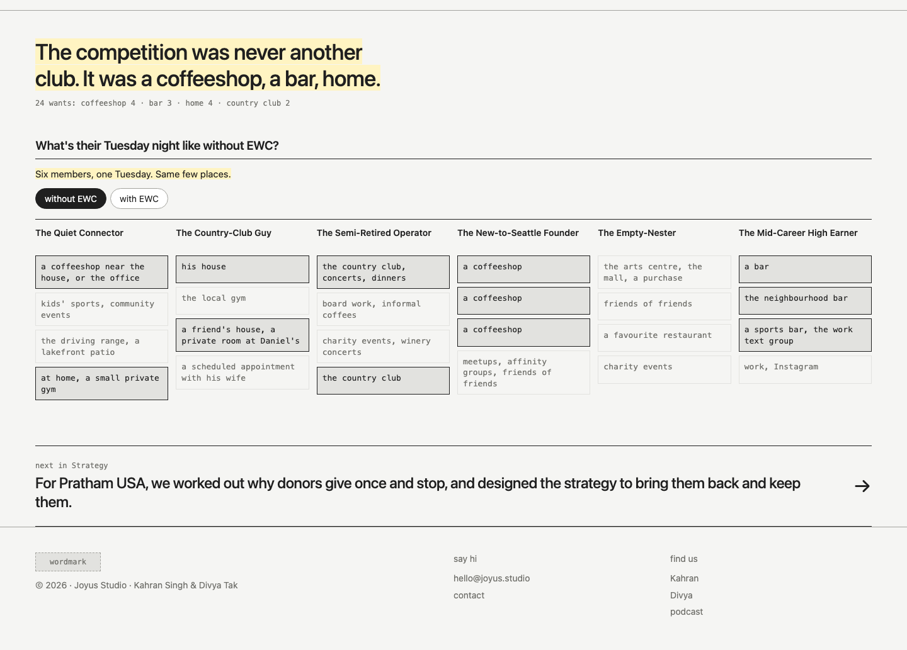
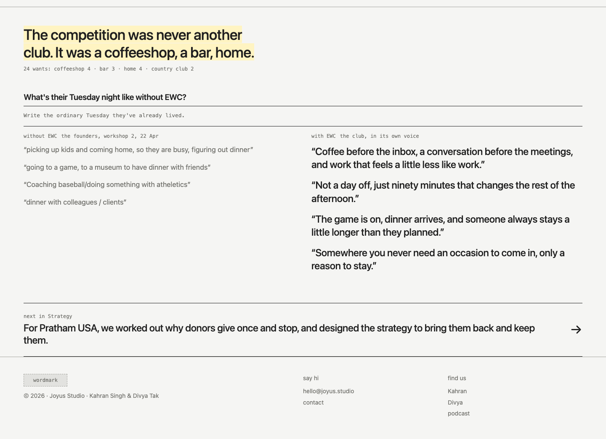
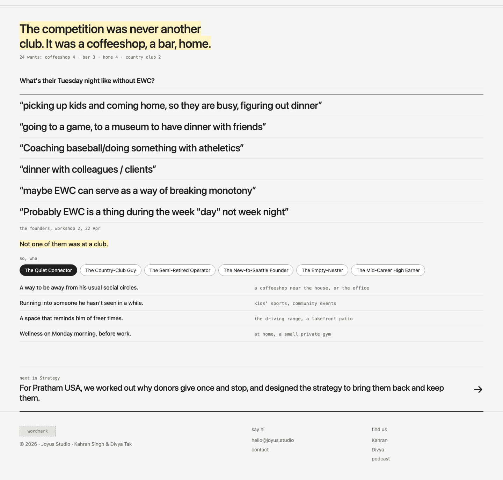
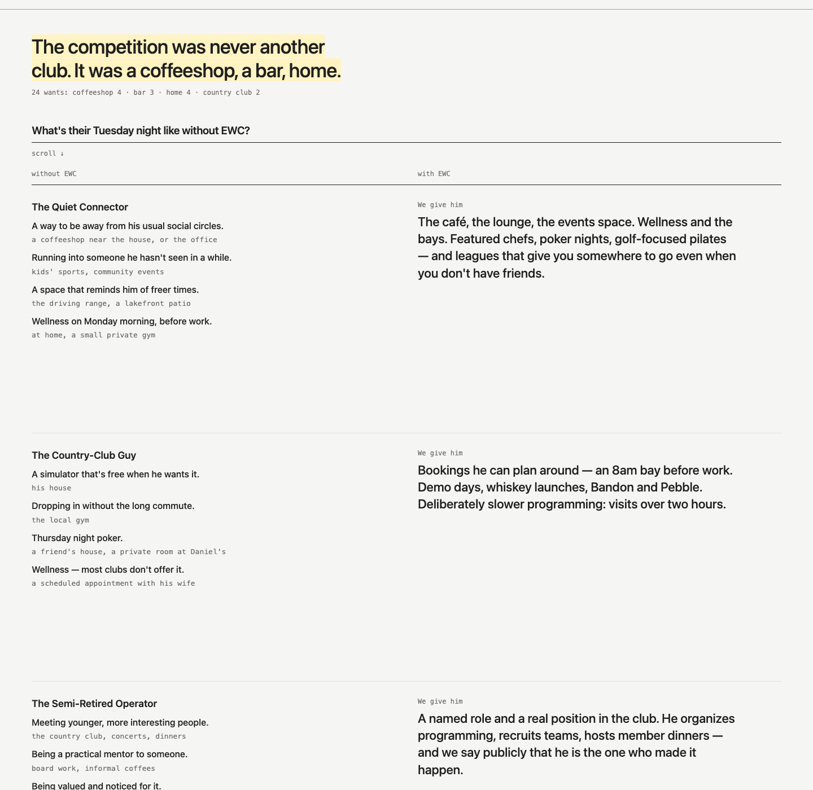
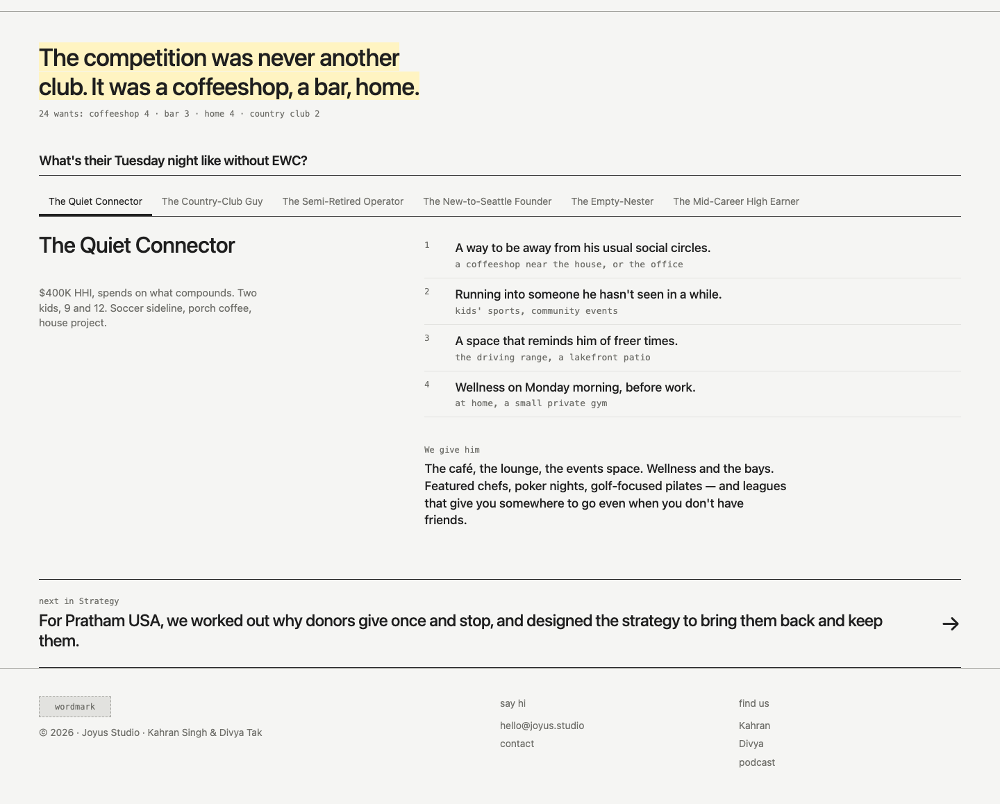

Study 46 · 27 October 2026 · Kahran
EWC, a Tuesday night six ways
Kahran picked 45 · 1. These are six variations on it, all asking the workshop's question, "What's their Tuesday night like without EWC?" New here: the founders' own answers to that question, word for word from the 22 April board (their real prospects' names stay off the page), and the club's live lines from the brand guide's voice page. Same rules as 45: the finding first, 120 words of ours at most, yellow means draft.
"tuesday night is the right one, but lets come up with some variations around that i can take a look at"
Kahran, 27 Oct, on Study 45





Next: Kahran picks, then the text pass. Every string on the six pages has a data-copy id; the full list, with each string's flag and source, is copy.json. Change the words in words.json and run build.cjs.